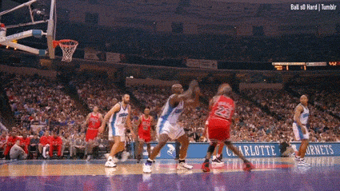
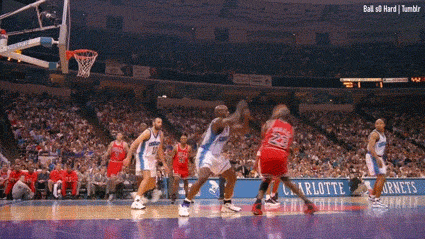
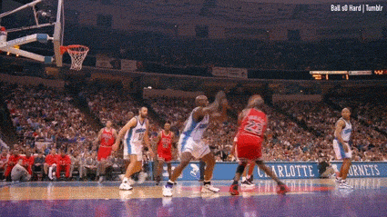

In this short PA, you will be writing a program that reads in a game log file.
You program will process the information, and then print out a summary.
This program should both read from a file.
Thus, use the open() command.
Name the program summarizer.py.
Your program should prompt the user for a name of a game log file to read in. The game log file will consist of lines that have this format:
team player points
Each of these lines represents a scoring event in a game.
team will be an indicator of the team that scores, player indicates which player scored, and points is a number representing the amount of points scored.
Below is an example gamelog file:
Atletico Costa 1
Atletico Kalinic 1
Bayern Wagner 1
Bayern Gnabry 1
Atletico Costa 1
Bayern Gnabry 1
Atletico Kalinic 1
This is an example from soccer. The two teams are Atletico (Madrid) and Bayern (Munich). In total, 7 goals are scored over the course of the game, by a total of 4 players. Your program should read in game log files of this format and be able to process them. You can assume that:
The number of points scored does not always have to be 1. For example, below is also valid content form a log file:
PHX Booker 2
DEN Jokic 2
PHX Ayton 3
DEN Harris 3
PHX Booker 2
DEN Jokic 2
PHX Jackson 2
PHX Warren 2
After reading the file and completing the necessary processing, your program should print a summary of the game. The printed output should include the following information:
For example, if your program were to run on the soccer gamelog file shown earlier (the match between Atletico and Bayern), the result should appear like so:
Atletico won!
Atletico scored 4 points.
Bayern scored 3 points.
4 players scored.
Costa scored first.
Kalinic scored last.
Linked below are serveral examples of log files and outputs.
Look there for reference.
Your program should be structured into at last three non-trivial functions. Ensure that you follow the style guidelines.
This program is due on Tuesday, March 19th at 7pm. Submit the program via on Gradescope. Do you best to get your program to pass all of the test-cases, and follow the style guidelines.